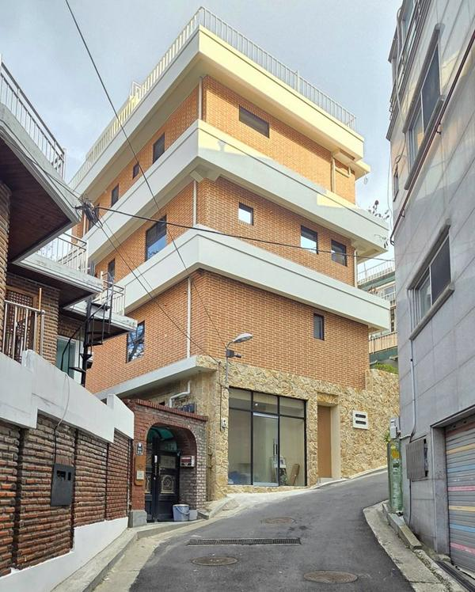

앱 안에서 열려 있어요. 복사나 전화가 잘 안 되면 휴대폰 브라우저로 열어 주세요.You’re viewing this inside an app. If copying or calling doesn’t work, open it in your phone’s browser.いまアプリの中でこのページを開いています。コピーや電話がうまくいかないときは、スマートフォンのブラウザで開いてください。您现在是在应用内打开本页面。如果无法复制或拨打电话，请用手机浏览器打开。您現在是在App內開啟本頁面。如果無法複製或撥打電話，請用手機瀏覽器開啟。
이 가이드 사용법How to use this guideHelpこのガイドの使い方使い方本指南使用方法使用方法本指南使用方法使用方法
- 언어 바꾸기오른쪽 위 언어 버튼을 누르면 한국어·English·日本語·简体中文·繁體中文 중에서 고를 수 있어요.Switch languageTap the language button at the top right to choose 한국어, English, 日本語, 简体中文 or 繁體中文.言語を切り替える右上の言語ボタンをタップすると、한국어・English・日本語・简体中文・繁體中文から選べます。切换语言点右上角的语言按钮，可选择 한국어、English、日本語、简体中文、繁體中文。切換語言點右上角的語言按鈕，可選擇 한국어、English、日本語、简体中文、繁體中文。
- 메뉴로 이동화면 위 메뉴를 누르면 그 내용으로 바로 가요. 메뉴는 옆으로 밀면 더 있어요.Jump with the menuTap a menu item at the top to jump there. Swipe the menu sideways to see more.メニューで移動上のメニューをタップすると、その内容まですぐに移動します。メニューは横にスライドすると、ほかの項目も表示されます。用菜单跳转点上方菜单，就能直接跳到对应内容。左右滑动菜单，可看到更多项目。用選單跳轉點上方選單，就能直接跳到對應內容。左右滑動選單，可看到更多項目。
- 눌러서 펼치기기기 이름을 누르면 사용법이 펼쳐지고, 다시 누르면 접혀요.Tap to openTap an appliance to open its guide, and tap again to close it.タップして開く家電名をタップすると使い方が開き、もう一度タップすると閉じます。点一下展开点家电名称即可展开使用方法，再点一次就会收起。點一下展開點家電名稱即可展開使用方法，再點一次就會收起。
- 그림 크게 보기그림을 클릭하면 확대됩니다. 두 손가락으로 확대하고, 다 보면 ‘닫기’를 눌러요.Zoom diagramsTap a diagram to open it full size. Pinch to zoom, then tap “Close”.図を大きく見る図をタップすると大きく表示されます。二本指で拡大でき、見終わったら「閉じる」をタップしてください。放大图片点图片可放大查看，也可以用双指缩放。看完请点“关闭”。放大圖片點圖片可放大查看，也可以用雙指縮放。看完請點「關閉」。
- 눌러서 복사복사 아이콘이 있는 버튼은 누르면 바로 복사돼요. 화면 아래에 ‘복사됨’이 잠깐 떠요.Tap to copyButtons with a copy icon copy their text. You’ll see a short “copied” note at the bottom.タップでコピーコピーのアイコンがあるボタンは、タップするとすぐにコピーされます。画面の下に「コピーしました」と少し表示されます。点一下复制带复制图标的按钮，点一下即可复制，屏幕下方会短暂显示“已复制”。點一下複製帶複製圖示的按鈕，點一下即可複製，螢幕下方會短暫顯示「已複製」。
- 지도 열기‘지도’ 버튼은 네이버지도에서 그 장소를 열어요.Open the map“Naver Map” and “Google Maps” buttons open the place in that app. Naver Map gives the best directions in Korea.地図を開く「NAVER Map」と「Googleマップ」のボタンで、その場所をアプリで開けます。韓国での道案内はNAVER Mapがいちばん正確です。打开地图点“NAVER地图”或“谷歌地图”按钮，即可在对应应用中打开该地点。在韩国，NAVER地图的路线导航最准确。開啟地圖點「NAVER地圖」或「Google地圖」按鈕，即可在對應App中開啟該地點。在韓國，NAVER地圖的路線導航最準確。
- 체크리스트체크아웃 목록은 직접 체크할 수 있고, 이 휴대폰에 기억돼요.ChecklistTick off the check-out list as you go. Your ticks are saved on this phone.チェックリストチェックアウトのリストは自分でチェックでき、このスマートフォンに保存されます。清单退房清单可以自己逐项打勾，记录会保存在这部手机上。清單退房清單可以自己逐項打勾，記錄會儲存在這部手機上。

Welcome환영합니다 · Welcome환영합니다・ようこそ환영합니다 · 欢迎환영합니다 · 歡迎
게스트 가이드북Guest guidebookゲストガイドブック房客指南房客指南
남산 자락 조용한 동네 필동, Copen Haus에 오신 것을 환영합니다.
Welcome to Copen Haus in Pildong, a quiet neighborhood at the foot of Namsan.
南山のふもとの静かな町、筆洞（ピルドン）のCopen Hausへようこそ。
欢迎入住南山脚下、宁静笔洞里的Copen Haus。
歡迎入住南山腳下、寧靜筆洞裡的Copen Haus。
환영합니다Welcomeようこそ欢迎歡迎
명동까지 걸어서 약 10분. 남산골한옥마을과 충무로역이 가깝고, 서울역·광화문까지 대중교통으로 쉽게 다닐 수 있어요.
Myeongdong is about a 10-minute walk away. Namsangol Hanok Village and Chungmuro Station are close by, and Seoul Station and Gwanghwamun are an easy ride away.
明洞（ミョンドン）まで歩いて約10分。南山コル韓屋村と忠武路（チュンムロ）駅がすぐ近くで、ソウル駅や光化門（クァンファムン）へも公共交通機関で気軽に行けます。
步行约10分钟即可到明洞。南山谷韩屋村和忠武路站就在附近，乘公共交通去首尔站、光化门也很方便。
步行約10分鐘即可到明洞。南山谷韓屋村和忠武路站就在附近，搭大眾運輸去首爾站、光化門也很方便。
체크인 15:00 · 체크아웃 11:00Check-in 3 PM · Check-out 11 AMチェックイン 15:00・アウト 11:00入住 15:00 · 退房 11:00入住 15:00 · 退房 11:00
- 주소Address住所地址地址
- 서울특별시 중구 필동로8길 32-1432-14, Pildong-ro 8-gil, Jung-gu, Seoulソウル特別市 中区 筆洞路8ギル 32-14首尔特别市 中区 笔洞路8街 32-14首爾特別市 中區 筆洞路8街 32-14
- 호스트Hostホスト房东房東
- Lisa · +82-10-9328-0969
카카오톡 · LINE · WhatsApp (ID: free01270)KakaoTalk · LINE · WhatsApp (ID: free01270)LINE・カカオトーク・WhatsApp（ID: free01270）KakaoTalk · LINE · WhatsApp（ID: free01270）KakaoTalk · LINE · WhatsApp（ID: free01270）
찾아오는 길Getting hereアクセス交通指南交通指南
가장 가까운 역은 지하철 3·4호선 충무로역이에요. 남산 쪽 오르막이라 큰 캐리어가 있다면 택시를 권해요.
The nearest station is Chungmuro (Lines 3 & 4). It’s uphill toward Namsan, so take a taxi if you have big suitcases.
最寄り駅は地下鉄3・4号線の忠武路（チュンムロ）駅です。南山へ向かう上り坂なので、大きなスーツケースをお持ちの場合はタクシーをおすすめします。
最近的车站是地铁3号线、4号线忠武路站。前往南山方向是上坡路，如果带着大行李箱，建议打车。
最近的車站是地鐵3號線、4號線忠武路站。前往南山方向是上坡路，如果帶著大行李箱，建議搭計程車。
차로 인천공항 약 60~80분 · 김포공항 약 40~50분 · 서울역 약 10~15분By car: Incheon Airport about 60–80 min · Gimpo Airport about 40–50 min · Seoul Station about 10–15 min車の場合：仁川空港 約60〜80分・金浦空港 約40〜50分・ソウル駅 約10〜15分开车：仁川机场 约60–80分钟 · 金浦机场 约40–50分钟 · 首尔站 约10–15分钟開車：仁川機場 約60–80分鐘 · 金浦機場 約40–50分鐘 · 首爾站 約10–15分鐘
충무로역 3번 출구 → Copen HausWalking route from Exit 33番出口からの徒歩ルート从3号出口出发的步行路线從3號出口出發的步行路線
약도이며 실제 축척과 달라요. 정확한 길찾기는 위 네이버지도 버튼을 이용하세요. 큰 캐리어가 있다면 오르막이 적은 택시를 권해요.Sketch map, not to scale. For exact directions, use the Naver Map button above. With big suitcases, a taxi saves you the uphill walk.略図のため縮尺は正確ではありません。詳しい道順は上のNAVER Mapのボタンをお使いください。大きな荷物があるときは、タクシーなら坂道を歩かずに済みます。此为示意图，比例不准确。详细路线请用上方的NAVER地图按钮。行李多的话，打车就不用走上坡路了。此為示意圖，比例不準確。詳細路線請用上方的NAVER地圖按鈕。行李多的話，搭計程車就不用走上坡路了。
- 13번 출구로 나오기
극동빌딩 맞은편, 퇴계로34길로 진입
- 2남산골한옥마을 정문
출구에서 도보 3~4분, 입장 무료
- 3한옥 · 천우각 연못 지나기
한옥은 월요일 휴관, 정원 길은 매일 열려 있어요
- 4전통정원 지나 필동 쪽으로
정원을 빠져나와 필동로로
- 5필동로8길로 들어서면 Copen Haus
서울특별시 중구 필동로8길 32-14
- 1Leave by Exit 3
Across from the Kukdong Building, turn into Toegye-ro 34-gil
- 2Namsangol Hanok Village main gate
3–4 minutes from the exit, free entry
- 3Pass the hanok houses and Cheonugak pond
The hanok houses close on Mondays, but the garden path is open every day
- 4Through the traditional garden toward Pildong
Exit the garden onto Pildong-ro
- 5Turn into Pildong-ro 8-gil, and you’re here
32-14, Pildong-ro 8-gil, Jung-gu, Seoul
- 13番出口を出る
極東ビルの向かいから退渓路34ギルに入ります
- 2南山コル韓屋村の正門
出口から3〜4分、入場無料です
- 3韓屋と泉雨閣（チョヌガク）の池を通り過ぎる
韓屋は月曜休みですが、庭園の道は毎日通れます
- 4伝統庭園を抜けて筆洞方面へ
庭園を出ると筆洞路（ピルドンロ）です
- 5筆洞路8ギルに入れば到着です
ソウル特別市 中区 筆洞路8ギル 32-14
- 1从3号出口出来
在极东大厦对面拐进退溪路34街
- 2南山谷韩屋村正门
出站后3–4分钟，免费入场
- 3经过韩屋和泉雨阁池塘
韩屋周一休息，但庭园小路每天都能通行
- 4穿过传统庭园，往笔洞方向走
出了庭园就是笔洞路
- 5拐进笔洞路8街就到了
首尔特别市 中区 笔洞路8街 32-14
- 1從3號出口出來
在極東大樓對面轉進退溪路34街
- 2南山谷韓屋村正門
出站後3–4分鐘，免費入場
- 3經過韓屋和泉雨閣池塘
韓屋週一休息，但庭園小路每天都能通行
- 4穿過傳統庭園，往筆洞方向走
出了庭園就是筆洞路
- 5轉進筆洞路8街就到了
首爾特別市 中區 筆洞路8街 32-14
체크인 · 체크아웃Check-in & check-outチェックイン・アウト入住与退房入住與退房
처음 오셨다면 이 순서로Just arrived? Start hereはじめての方は、この順番で第一次来？请按这个顺序第一次來？請按這個順序
- 1문 열기Get inお部屋に入る进入房间進入房間도어락 비밀번호는 체크인 당일 에어비앤비 메시지로 보내 드려요. 못 받으셨다면 눌러서 Lisa에게 연락하세요The door code comes by Airbnb message on check-in day. Didn’t get it? Tap to contact Lisaドアの暗証番号はチェックイン当日にAirbnbのメッセージでお送りします。届いていなければ、タップしてLisaにご連絡ください门锁密码会在入住当天通过Airbnb消息发送给您。如果没收到，请点这里联系Lisa門鎖密碼會在入住當天透過Airbnb訊息傳送給您。如果沒收到，請點這裡聯絡Lisa
- 3난방·온수 켜기Turn on heat & hot water暖房とお湯をつける打开暖气和热水開啟暖氣和熱水현관 오른쪽 벽 온도조절기Thermostat on the wall, right of the entrance玄関を入って右の壁にある温度調節器です温控器在进门右手边的墙上溫控器在進門右手邊的牆上
- 4쓰레기·하우스 룰 보기Read trash & house rulesゴミ出し・ハウスルールを確認查看垃圾分类与入住守则查看垃圾分類與入住守則쓰레기는 일~금 저녁 7시~자정, 토요일은 안 돼요Trash goes out Sun–Fri 7 PM to midnight, never on Saturdayゴミ出しは日〜金の19:00〜24:00（土曜日は不可）周日至周五19:00–24:00可扔垃圾（周六不可）週日至週五19:00–24:00可丟垃圾（週六不可）
지금 필동은Right now in Pildongいまの筆洞（ピルドン）笔洞此刻筆洞此刻
- 출입 방법Getting in入室方法入住方式入住方式
- 도어락 비밀번호는 체크인 당일 에어비앤비 메시지로 보내 드려요.We send the door lock code by Airbnb message on check-in day.ドアロックの暗証番号は、チェックイン当日にAirbnbのメッセージでお送りします。门锁密码会在入住当天通过Airbnb消息发送给您。門鎖密碼會在入住當天透過Airbnb訊息傳送給您。
- 입구·층Entrance入口入口入口
- 건물 1층Ground floor (1F)1階1楼1樓
- 짐 보관Luggage荷物の預かり行李寄存行李寄放
- 미리 알려 주시면 안내해 드려요.Let us know in advance and we’ll help you arrange it.事前にご連絡いただければ、ご相談に応じます。请提前联系我们，我们会尽量帮您安排。請提前聯絡我們，我們會盡量幫您安排。


체크아웃 전에 부탁드려요Before you check outチェックアウトの前に退房之前退房之前
와이파이 · 생활 안내Wi-Fi & house rulesWi-Fi・ハウスルールWi-Fi与入住守则Wi-Fi與入住守則
- Wi-Fi
- 네트워크Networkネットワーク网络網路Copen_Green비밀번호Passwordパスワード密码密碼
비밀번호를 눌러 복사 · 또는 카메라로 QR 코드를 찍으세요Tap the password to copy it · or scan the QR code with your cameraパスワードをタップでコピーできます・カメラでQRコードを読み取っても接続できます点密码即可复制 · 也可以用相机扫描二维码连接點密碼即可複製 · 也可以用相機掃描QR Code連線

쓰레기 버리는 법Trash & recyclingゴミ・リサイクル垃圾与回收垃圾與回收
봉투 위치와 내놓는 자리: 1층 현관문 옆. 시간·장소를 어기면 과태료 10만~30만 원이 부과돼요.
Trash bags are kept next to the ground-floor front door, and that’s where trash goes out too. Wrong day, time or place can mean a ₩100,000–300,000 fine.
ゴミ袋は1階の玄関横に置いてあり、ゴミを出す場所も同じです。曜日・時間・場所を間違えると₩100,000〜300,000の罰金が科されることがあります。
垃圾袋放在1楼大门旁边，扔垃圾也是在这里。如果日期、时间或地点不对，可能会被处以₩100,000–300,000的罚款。
垃圾袋放在1樓大門旁邊，丟垃圾也是在這裡。如果日期、時間或地點不對，可能會被處以₩100,000–300,000的罰款。
하우스 룰House rulesハウスルール入住守则入住守則
- 1실내 금연입니다. 건물 앞·계단에서도 흡연하지 말아 주세요.
- 2밤 10시~아침 8시는 조용히 해 주세요. 골목과 계단의 대화도 잘 울립니다.
- 3파티·행사는 불가합니다.
- 4예약 인원 외 방문객은 미리 문의해 주세요.
- 5실내에서는 신발을 벗어 주세요.
- 6반려동물은 데려올 수 없어요.
- 7파손된 물건이 있으면 바로 알려 주세요. 솔직하게 말씀해 주시면 됩니다.
- 1No smoking indoors, and please don’t smoke in front of the building or on the stairs either.
- 2Quiet hours are 10 PM – 8 AM. Voices carry in the alley and stairwell.
- 3No parties or events.
- 4Please ask us before inviting anyone who isn’t on the booking.
- 5Please take off your shoes indoors.
- 6Please don’t bring pets.
- 7If anything is broken, tell us right away. Being honest is all we ask.
- 1室内は禁煙です。建物の前や階段での喫煙もご遠慮ください。
- 222:00〜翌8:00はお静かにお願いします。路地や階段では声がよく響きます。
- 3パーティーやイベントはご遠慮ください。
- 4予約に含まれていない方を招く場合は、事前にご相談ください。
- 5室内では靴を脱いでください。
- 6ペットの同伴はご遠慮ください。
- 7何か壊れてしまったら、すぐにお知らせください。正直に教えていただければ大丈夫です。
- 1室内禁烟。也请不要在楼门口或楼梯上吸烟。
- 222:00至次日8:00请保持安静。小巷和楼梯间的声音传得很远。
- 3请勿举办派对或活动。
- 4如需邀请预订名单以外的人，请事先与我们商量。
- 5进屋请脱鞋。
- 6请勿携带宠物。
- 7如果有东西损坏，请马上告诉我们。如实告知就好，不用担心。
- 1室內禁菸。也請不要在建築物前或樓梯間吸菸。
- 222:00至次日8:00請保持安靜。小巷和樓梯間的聲音傳得很遠。
- 3請勿舉辦派對或活動。
- 4如需邀請預訂名單以外的人，請事先與我們商量。
- 5進屋請脫鞋。
- 6請勿攜帶寵物。
- 7如果有東西損壞，請馬上告訴我們。如實告知就好，不用擔心。
집 사용법Using the houseお部屋の使い方房间使用方法房間使用方法
기기를 누르면 그림과 번호별 설명이 펼쳐져요. 그림을 클릭하면 확대됩니다.
Tap an appliance to open its guide. Tap a diagram to see it larger. (Labels on the appliances are in Korean, so match them by number.)
家電名をタップすると使い方が開きます。図をタップすると大きく見られます。（家電の表示は韓国語なので、番号で照らし合わせてください。）
点家电即可展开使用方法，点图片可放大查看。（家电上的标示是韩文，请对照编号使用。）
點家電即可展開使用方法，點圖片可放大查看。（家電上的標示是韓文，請對照編號使用。）
난방 · 온수Heating & hot water暖房・お湯暖气·热水暖氣·熱水현관 오른쪽 벽 온도조절기Thermostat on the wall, right of the entrance玄関を入って右の壁にある温度調節器です温控器在进门右手边的墙上溫控器在進門右手邊的牆上
현관 오른쪽 벽에 있는 온도조절기로 난방과 온수를 조절해요.
Use the thermostat on the wall to the right of the entrance for both heating and hot water.
暖房もお湯も、玄関右側の壁にある温度調節器で操作します。
暖气和热水都用进门右侧墙上的温控器操作。
暖氣和熱水都用進門右側牆上的溫控器操作。
- 전원: 보일러를 켜고 끌 때 눌러요.
- 외출: 집을 비울 때 눌러요.
- 난방: 난방 버튼을 누르고 다이얼을 왼쪽으로 돌리면 온도가 내려가고, 오른쪽으로 돌리면 올라가요.
- Power (전원): turns the boiler on and off.
- Away (외출): press when you go out.
- Heating (난방): press it, then turn the dial right to warm up or left to cool down.
- 電源（전원）: ボイラーのオン・オフ。
- 外出（외출）: 出かけるときに押します。
- 暖房（난방）: 押してから、ダイヤルを右に回すと温度が上がり、左に回すと下がります。
- 电源（전원）: 开关锅炉。
- 外出（외출）: 出门时按下。
- 暖气（난방）: 按下后，向右转旋钮升温，向左转降温。
- 電源（전원）: 開關鍋爐。
- 外出（외출）: 出門時按下。
- 暖氣（난방）: 按下後，向右轉旋鈕升溫，向左轉降溫。
- 화면왼쪽 숫자는 실내 온도, 오른쪽 숫자는 온수 온도예요.
- 온수온수 버튼을 누르고 다이얼로 온수 온도를 맞춰요.
- 예약시간 예약을 설정해요.
- 온돌바닥 난방(온돌) 기능을 설정해요.
- ScreenThe left number is the room temperature; the right one is the hot-water temperature.
- Hot water (온수)Press it, then turn the dial to set the water temperature.
- Timer (예약)Set a schedule.
- Ondol (온돌)Underfloor heating mode.
- 画面左の数字が室温、右の数字がお湯の温度です。
- お湯（온수）押してからダイヤルを回してお湯の温度を設定します。
- 予約（예약）タイマーを設定します。
- オンドル（온돌）床暖房モードです。
- 屏幕左边的数字是室温，右边的数字是热水温度。
- 热水（온수）按下后转动旋钮，设定热水温度。
- 预约（예약）设定定时。
- 地暖（온돌）地暖模式。
- 螢幕左邊的數字是室溫，右邊的數字是熱水溫度。
- 熱水（온수）按下後轉動旋鈕，設定熱水溫度。
- 預約（예약）設定定時。
- 地暖（온돌）地暖模式。
세탁기Washing machine洗濯機洗衣机洗衣機코스 선택 → 동작 버튼 길게Pick a course, then hold Startコースを選んでスタートを長押し选好程序后长按启动键選好行程後長按啟動鍵
전원을 켜고 코스를 고른 뒤 동작 버튼을 길게 누르면 시작돼요.
Turn it on, choose a course, then press and hold Start.
電源を入れて、コースを選び、スタートボタンを長押ししてください。
打开电源，选好程序后长按启动键即可。
開啟電源，選好行程後長按啟動鍵即可。
- 1코스 다이얼: 돌려서 코스를 골라요 (표준세탁이 기본)
- 2세탁온도: 물 온도 선택 (냉수~90도)
- 3헹굼횟수: 헹굼 횟수 선택 (1~5회)
- 4탈수세기: 탈수 세기 선택 (섬세~최강)
- 5오염도: 낮음 · 보통 · 높음 중 선택
- 6종료예약: 세탁이 끝나는 시간을 예약해요
- 7버블불림: 거품으로 찌든 때를 불려서 세탁해요
- 8세탁물추가: 작동 중 빨래를 더 넣고 싶을 때 눌러요
- 9스마트컨트롤: 스마트폰 앱(SmartThings)으로 조작해요
- 10전원: 세탁기를 켜고 꺼요
- 11동작/일시정지: 길게 눌러 시작, 누르면 잠시 멈춰요
- 12어린이보호: 세탁온도 + 헹굼횟수를 함께 3초 누르면 잠겨요
- 1Course dial (코스): turn to pick a course (Standard 표준세탁 is the default)
- 2Temperature (세탁온도): cold to 90°C
- 3Rinses (헹굼횟수): 1 to 5
- 4Spin (탈수세기): delicate to max
- 5Soil level (오염도): low, normal or high
- 6Finish timer (종료예약): set when the wash should end
- 7Bubble soak (버블불림): soaks tough dirt with foam
- 8Add laundry (세탁물추가): press to add items mid-cycle
- 9Smart control (스마트컨트롤): control it with the SmartThings app
- 10Power: on and off
- 11Start / Pause: hold to start, press to pause
- 12Child lock (어린이보호): hold Temperature + Rinses together for 3 seconds
- 1コースダイヤル（코스）: 回してコースを選びます（標準は 표준세탁）
- 2洗濯温度（세탁온도）: 冷水〜90°C
- 3すすぎ回数（헹굼횟수）: 1〜5回
- 4脱水の強さ（탈수세기）: ソフト〜最強
- 5汚れ具合（오염도）: 少なめ・標準・多め
- 6終了予約（종료예약）: 洗濯が終わる時刻を設定
- 7泡つけおき（버블불림）: 頑固な汚れを泡でつけおき
- 8洗濯物の追加（세탁물추가）: 途中で洗濯物を入れたいときに押す
- 9スマートコントロール（스마트컨트롤）: SmartThingsアプリで操作
- 10電源: オン・オフ
- 11スタート/一時停止: 長押しでスタート、押すと一時停止
- 12チャイルドロック（어린이보호）: 洗濯温度とすすぎ回数を同時に3秒長押し
- 1程序旋钮（코스）: 转动选择程序（标准洗是 표준세탁）
- 2洗涤温度（세탁온도）: 冷水～90°C
- 3漂洗次数（헹굼횟수）: 1～5次
- 4脱水强度（탈수세기）: 轻柔～最强
- 5脏污程度（오염도）: 少·标准·多
- 6预约结束（종료예약）: 设定洗完的时间
- 7泡沫浸泡（버블불림）: 用泡沫浸泡顽固污渍
- 8中途添衣（세탁물추가）: 洗到一半想加衣服时按下
- 9智能控制（스마트컨트롤）: 用SmartThings应用操作
- 10电源: 开·关
- 11启动/暂停: 长按启动，短按暂停
- 12童锁（어린이보호）: 同时长按洗涤温度和漂洗次数3秒
- 1行程旋鈕（코스）: 轉動選擇行程（標準洗是 표준세탁）
- 2洗滌溫度（세탁온도）: 冷水～90°C
- 3漂洗次數（헹굼횟수）: 1～5次
- 4脫水強度（탈수세기）: 輕柔～最強
- 5髒汙程度（오염도）: 少·標準·多
- 6預約結束（종료예약）: 設定洗完的時間
- 7泡沫浸泡（버블불림）: 用泡沫浸泡頑固汙漬
- 8中途添衣（세탁물추가）: 洗到一半想加衣服時按下
- 9智慧控制（스마트컨트롤）: 用SmartThings App操作
- 10電源: 開·關
- 11啟動/暫停: 長按啟動，短按暫停
- 12童鎖（어린이보호）: 同時長按洗滌溫度和漂洗次數3秒
건조기Dryer乾燥機烘干机烘乾機코스 선택 → 동작 버튼 길게Pick a course, then hold Startコースを選んでスタートを長押し选好程序后长按启动键選好行程後長按啟動鍵
전원을 켜고 코스를 고른 뒤 동작 버튼을 길게 누르면 시작돼요.
Turn it on, choose a course, then press and hold Start.
電源を入れて、コースを選び、スタートボタンを長押ししてください。
打开电源，选好程序后长按启动键即可。
開啟電源，選好行程後長按啟動鍵即可。
- 1코스 다이얼: 돌려서 코스를 골라요 (표준건조가 기본)
- 2건조정도: 1~4단계 (3이 표준)
- 3건조시간: 20 · 40 · 60 · 90분 이상 (시간건조 · 선반건조 코스)
- 4다림질알림: 다림질하기 좋은 상태일 때 알려 줘요
- 5구김방지: 건조 후 구김을 줄여 줘요
- 6열풍내부살균: 열풍으로 건조기 안을 살균해요
- 7드럼라이트: 건조기 안 불을 켜고 꺼요
- 8소리 끔: 알림음을 꺼요
- 9스마트컨트롤: 스마트폰 앱(SmartThings)으로 조작해요
- 10전원: 건조기를 켜고 꺼요
- 11동작/일시정지: 길게 눌러 시작, 누르면 잠시 멈춰요
- 12어린이보호: 건조정도 + 건조시간을 함께 3초 누르면 잠겨요
이불털기/패딩케어 코스는 에어워시 코스예요.
- 1Course dial (코스): turn to pick a course (Standard 표준건조 is the default)
- 2Dryness (건조정도): levels 1 to 4 (3 is standard)
- 3Dry time (건조시간): 20, 40, 60 or 90+ minutes (Timed and Rack courses)
- 4Iron alert (다림질알림): beeps when clothes are just right for ironing
- 5Wrinkle care (구김방지): reduces creases after drying
- 6Hot-air sanitize (열풍내부살균): sanitizes the drum with hot air
- 7Drum light (드럼라이트): light inside on/off
- 8Sound off (소리 끔): turns off the beeps
- 9Smart control (스마트컨트롤): control it with the SmartThings app
- 10Power: on and off
- 11Start / Pause: hold to start, press to pause
- 12Child lock (어린이보호): hold Dryness + Dry time together for 3 seconds
- 1コースダイヤル（코스）: 回してコースを選びます（標準は 표준건조）
- 2乾燥度（건조정도）: 1〜4段階（標準は3）
- 3乾燥時間（건조시간）: 20・40・60・90分以上（時間乾燥・ラック乾燥コース）
- 4アイロン通知（다림질알림）: アイロンがけにちょうどよい状態になると音でお知らせ
- 5しわ防止（구김방지）: 乾燥後のしわを抑えます
- 6熱風除菌（열풍내부살균）: 熱風でドラム内を除菌
- 7ドラムライト（드럼라이트）: 内部ライトのオン・オフ
- 8消音（소리 끔）: 操作音を消します
- 9スマートコントロール（스마트컨트롤）: SmartThingsアプリで操作
- 10電源: オン・オフ
- 11スタート/一時停止: 長押しでスタート、押すと一時停止
- 12チャイルドロック（어린이보호）: 乾燥度と乾燥時間を同時に3秒長押し
- 1程序旋钮（코스）: 转动选择程序（标准烘干是 표준건조）
- 2干燥程度（건조정도）: 1～4档（标准为3）
- 3烘干时间（건조시간）: 20·40·60·90分钟以上（定时烘干·烘干架程序）
- 4熨烫提醒（다림질알림）: 衣物刚好适合熨烫时会响铃提醒
- 5防皱（구김방지）: 减少烘干后的褶皱
- 6热风除菌（열풍내부살균）: 用热风给滚筒内部除菌
- 7滚筒灯（드럼라이트）: 开关内部照明
- 8静音（소리 끔）: 关闭提示音
- 9智能控制（스마트컨트롤）: 用SmartThings应用操作
- 10电源: 开·关
- 11启动/暂停: 长按启动，短按暂停
- 12童锁（어린이보호）: 同时长按干燥程度和烘干时间3秒
- 1行程旋鈕（코스）: 轉動選擇行程（標準烘乾是 표준건조）
- 2乾燥程度（건조정도）: 1～4檔（標準為3）
- 3烘乾時間（건조시간）: 20·40·60·90分鐘以上（定時烘乾·烘乾架行程）
- 4熨燙提醒（다림질알림）: 衣物剛好適合熨燙時會響鈴提醒
- 5防皺（구김방지）: 減少烘乾後的褶皺
- 6熱風除菌（열풍내부살균）: 用熱風給滾筒內部除菌
- 7滾筒燈（드럼라이트）: 開關內部照明
- 8靜音（소리 끔）: 關閉提示音
- 9智慧控制（스마트컨트롤）: 用SmartThings App操作
- 10電源: 開·關
- 11啟動/暫停: 長按啟動，短按暫停
- 12童鎖（어린이보호）: 同時長按乾燥程度和烘乾時間3秒
The Bedding Refresh / Padding Care (이불털기/패딩케어) course is an Air Wash course.
「布団はたき/ダウンケア（이불털기/패딩케어）」はエアウォッシュのコースです。
“拍打被子/羽绒服护理（이불털기/패딩케어）”是空气洗程序。
「拍打被子/羽絨服護理（이불털기/패딩케어）」是空氣洗行程。
전자레인지Microwave電子レンジ微波炉微波爐다이얼 2개: 모드 → 시간Two dials: mode, then timeダイヤルは2つ：モードと時間两个旋钮：模式和时间兩個旋鈕：模式和時間
다이얼 2개만 돌리면 돼요. 모드를 고르고 시간을 맞춰 주세요.
Just two dials: pick a mode, then set the time.
ダイヤルは2つだけ。モードを選んで、時間を合わせます。
只有两个旋钮。先选模式，再设定时间。
只有兩個旋鈕。先選模式，再設定時間。
- 1음식을 넣고 문을 닫아요
- 2선택모드 다이얼을 돌려 모드를 맞춰요
약 · 중 · 강은 화력 세기(강할수록 빨리 데워져요), 데우기는 남은 음식이나 식은 음식, 해동은 얼린 음식
- 3분(min) 다이얼을 시계 방향으로 돌려 시간을 맞춰요
최대 30분
- 4시간이 다 되면 문을 열고 꺼내요
- 1Put the food in and close the door
- 2Turn the Mode dial (선택모드)
Low · Medium · High (약 · 중 · 강) = power level (higher heats faster). Warm (데우기) = reheat leftovers. Defrost (해동) = thaw frozen food.
- 3Turn the Minutes dial (분) clockwise
Up to 30 minutes
- 4When it stops, open the door and take it out
- 1食べ物を入れてドアを閉める
- 2モードダイヤル（선택모드）を回す
弱・中・強（약・중・강） = 出力（強いほど早く温まります）。温め（데우기） = 料理の温め直し。解凍（해동） = 冷凍食品の解凍。
- 3時間ダイヤル（분）を時計回りに回す
最大30分
- 4止まったらドアを開けて取り出す
- 1放入食物，关上炉门
- 2转动模式旋钮（선택모드）
弱·中·强（약 · 중 · 강） = 火力（越强加热越快）。加热（데우기） = 热剩饭剩菜。解冻（해동） = 解冻冷冻食品。
- 3顺时针转动时间旋钮（분）
最长30分钟
- 4停止后打开炉门取出
- 1放入食物，關上爐門
- 2轉動模式旋鈕（선택모드）
弱·中·強（약 · 중 · 강） = 火力（越強加熱越快）。加熱（데우기） = 熱剩飯剩菜。解凍（해동） = 解凍冷凍食品。
- 3順時針轉動時間旋鈕（분）
最長30分鐘
- 4停止後開啟爐門取出
주의 · 금속 그릇, 알루미늄 포일, 밀폐 용기는 넣지 마세요.
Careful · No metal dishes, foil or sealed containers.
ご注意・金属の食器、アルミホイル、密閉容器は使えません。
注意 · 不能使用金属餐具、锡纸和密封容器。
注意 · 不能使用金屬餐具、鋁箔紙和密封容器。
인덕션 (3구)Induction cooktopIHコンロ电磁炉電磁爐전원 → 화구 화력 조절Power on, then set each burner電源を入れて、コンロごとに設定开机后逐个设定炉头開機後逐個設定爐頭
조작부의 번호와 아래 설명을 함께 확인해 주세요.
Match the numbers on the touch panel with the list below.
タッチパネルの番号と、下のリストを照らし合わせてください。
请对照触控面板上的编号和下方列表。
請對照觸控面板上的編號和下方列表。
- 9전원: 전원을 켜고 꺼요
- 1·2·4화력 − / +: 1번 · 2번 · 3번 화구의 불 세기를 조절해요
- 5화구 선택: 작동 중인 화구를 골라요
- 6작동 / 일시정지
- 3타이머 − / +: 최대 60분
- 7터보: 3번 화구를 최대 화력으로 (10분 뒤 원래 단계로)
- 8잠금: 잠금 상태를 보여 줘요
- HH 표시: 화면에 H가 보이면 아직 뜨거워요. 조심하세요.
- 9Power: on and off
- 1·2·4Heat − / +: for burners 1, 2 and 3
- 5Burner select (화구 선택): choose which active burner to adjust
- 6Start / Pause
- 3Timer − / +: up to 60 minutes
- 7Turbo: max heat on burner 3 (drops back after 10 minutes)
- 8Lock: shows when the panel is locked
- HH on the display: the surface is still hot. Be careful.
- 9電源: オン・オフ
- 1・2・4火力 − / +: 1・2・3番のコンロ用
- 5コンロ選択（화구 선택）: 使用中のどのコンロを調整するか選びます
- 6スタート/一時停止
- 3タイマー − / +: 最大60分
- 7ターボ: 3番コンロを最大火力に（10分後に元に戻ります）
- 8ロック: パネルがロック中であることを表示
- H表示の「H」: 天板がまだ熱い状態です。ご注意ください。
- 9电源: 开·关
- 1·2·4火力 − / +: 用于1·2·3号炉头
- 5炉头选择（화구 선택）: 选择要调节哪个正在使用的炉头
- 6启动/暂停
- 3定时 − / +: 最长60分钟
- 7速热: 3号炉头开到最大火力（10分钟后恢复）
- 8锁定: 显示面板已锁定
- H显示“H”: 炉面还很烫，请小心。
- 9電源: 開·關
- 1·2·4火力 − / +: 用於1·2·3號爐頭
- 5爐頭選擇（화구 선택）: 選擇要調節哪個正在使用的爐頭
- 6啟動/暫停
- 3定時 − / +: 最長60分鐘
- 7速熱: 3號爐頭開到最大火力（10分鐘後恢復）
- 8鎖定: 顯示面板已鎖定
- H顯示「H」: 爐面還很燙，請小心。
TV 리모컨TV remoteテレビのリモコン电视遥控器電視遙控器넷플릭스·유튜브 바로가기 버튼Netflix and YouTube shortcut buttonsNetflixとYouTubeのボタン付き带Netflix和YouTube按键帶Netflix和YouTube按鍵
자주 쓰는 버튼만 번호로 알려 드릴게요.
Here are the buttons you’ll actually use.
実際によく使うボタンはこちらです。
这些是实际常用的按键。
這些是實際常用的按鍵。
- 1전원: TV를 켜고 꺼요
- 2음소거: 소리를 잠시 꺼요
- 3숫자 버튼: 채널 번호를 눌러요
- 4방향키 · 확인: 이동하고 선택해요
- 5이전: 이전 화면으로 가요
- 6홈: 홈 화면으로 가요
- 7Live TV: TV 방송을 봐요
- 8음량 + / −: 소리를 키우고 줄여요
- 9채널 + / −: 채널을 바꿔요
- 10외부입력: 연결한 기기 화면으로 바꿔요
- 11앱 버튼: 넷플릭스 · 유튜브 · 프라임 · 디즈니+ 바로 열기
- 12재생 버튼: 되감기 · 재생/멈춤 · 빨리감기
- 1Power
- 2Mute
- 3Number keys: enter a channel
- 4Arrows · OK: move and select
- 5Back
- 6Home
- 7Live TV: watch broadcast TV
- 8Volume (음량) + / −: sound up or down
- 9Channel (채널) + / −: change channels
- 10Input: switch to a connected device
- 11App buttons: Netflix, YouTube, Prime Video, Disney+
- 12Playback: rewind, play/pause, fast-forward
- 1電源
- 2消音
- 3数字ボタン: チャンネルを入力
- 4矢印・決定: 移動して選択
- 5戻る
- 6ホーム
- 7Live TV: テレビ放送を見る
- 8音量（음량） + / −: 音を大きく・小さく
- 9チャンネル（채널） + / −: チャンネルを切り替え
- 10入力切替: 接続した機器に切り替え
- 11アプリボタン: Netflix・YouTube・Prime Video・Disney+
- 12再生操作: 巻き戻し・再生/一時停止・早送り
- 1电源
- 2静音
- 3数字键: 输入频道
- 4方向键·确定: 移动和选择
- 5返回
- 6主页
- 7Live TV: 看电视直播
- 8音量（음량） + / −: 调大·调小声音
- 9频道（채널） + / −: 切换频道
- 10信号源: 切换到已连接的设备
- 11应用按键: Netflix·YouTube·Prime Video·Disney+
- 12播放控制: 快退·播放/暂停·快进
- 1電源
- 2靜音
- 3數字鍵: 輸入頻道
- 4方向鍵·確定: 移動和選擇
- 5返回
- 6首頁
- 7Live TV: 看電視直播
- 8音量（음량） + / −: 調大·調小聲音
- 9頻道（채널） + / −: 切換頻道
- 10訊號源: 切換到已連線的裝置
- 11App按鍵: Netflix·YouTube·Prime Video·Disney+
- 12播放控制: 倒轉·播放/暫停·快轉
넷플릭스, 디즈니+ 등은 개인 계정으로 로그인해 이용하실 수 있어요.
Sign in with your own account for Netflix, Disney+ and others.
NetflixやDisney+などは、ご自身のアカウントでログインしてください。
Netflix、Disney+等请登录您自己的账号。
Netflix、Disney+等請登入您自己的帳號。
전기 · 콘센트Power outlets電気・コンセント电源·插座電源·插座220V · 둥근 핀 두 개(C/F형)220V · two round pins (Type C/F)220V・丸ピン2本（C/F型）220V·两个圆头插脚（C/F型）220V·兩個圓頭插腳（C/F型）
한국 콘센트는 220V·60Hz이고, 둥근 핀 두 개짜리 플러그(C/F형)를 써요. 해외에서 가져온 기기는 플러그 모양과 전압을 먼저 확인해 주세요.
Outlets in Korea are 220V, 60Hz and take plugs with two round pins (Type C/F). Plugs from the US, Japan, Taiwan, the UK, Australia and mainland China need an adapter.
韓国のコンセントは220V・60Hzで、丸いピン2本のプラグ（C/F型）です。日本のプラグ（A型）はそのまま挿せないので、変換プラグが必要です。
韩国插座是220V·60Hz，使用两个圆头插脚的插头（C/F型）。中国大陆常见的扁头插头（A/I型）插不进去，需要转换插头。
韓國插座是220V·60Hz，使用兩個圓頭插腳的插頭（C/F型）。台灣的扁腳插頭（A/B型）插不進去，需要轉接頭。
- 전압220V · 60Hz
- 플러그C·F형: 둥근 핀 두 개
- 확인충전기에 “100–240V”라고 적혀 있으면 어댑터만 끼우면 돼요. 휴대폰·노트북 충전기는 대부분 그래요.
- 주의110V 전용 드라이기·고데기는 고장 나거나 뜨거워질 수 있으니 쓰지 마세요.
- Voltage220V · 60Hz
- PlugType C / F: two round pins
- CheckIf your charger says “100–240V”, a plug adapter is all you need. Most phone and laptop chargers do.
- CarefulDon’t use 110V-only hair dryers or straighteners. They can break or overheat.
- 電圧220V・60Hz（日本は100V）
- プラグC・F型: 丸いピン2本
- 確認充電器に「100–240V」と書いてあれば、変換プラグだけで使えます。スマホ・パソコンの充電器はほとんど対応しています。
- 注意日本国内専用（100V）のドライヤーやヘアアイロンは、故障や過熱のおそれがあるので使わないでください。
- 电压220V·60Hz（电压与中国大陆相同）
- 插头C·F型: 两个圆头插脚
- 确认充电器上写着“100–240V”，加个转换插头就能用。手机、电脑的充电器大多支持。
- 注意只支持110V的吹风机、卷发棒可能会损坏或过热，请不要使用。
- 電壓220V·60Hz（台灣是110V）
- 插頭C·F型: 兩個圓頭插腳
- 確認充電器上寫著「100–240V」，加個轉接頭就能用。手機、筆電的充電器大多支援。
- 注意只支援110V的吹風機、離子夾可能會故障或過熱，請不要使用。
어댑터는 인천공항 상점이나 다이소에서 살 수 있어요.
Adapters are sold at shops in Incheon Airport and at Daiso stores.
変換プラグは仁川空港のお店やダイソーで買えます。
转换插头可以在仁川机场的商店或大创（Daiso）买到。
轉接頭可以在仁川機場的商店或大創（Daiso）買到。
주변 맛집 · 카페Food & coffee nearby近くのグルメ・カフェ附近美食·咖啡附近美食·咖啡
대표 맛집, 필동면옥
The local star: Pildong Myeonok
地元の名店、筆洞麺屋
本地名店：笔洞面屋
本地名店：筆洞麵屋
대표 맛집은 미쉐린 빕구르망 평양냉면집 필동면옥. 점심엔 줄이 길어 조금 일찍 가세요.
A Michelin Bib Gourmand pick for Pyongyang-style cold noodles. Go a little early at lunch to beat the queue.
いちばんのおすすめは筆洞麺屋（ピルドンミョノク）。ミシュランのビブグルマンに選ばれた平壌冷麺の店です。お昼どきは行列ができるので、少し早めに行くのがおすすめです。
最推荐的是笔洞面屋（Pildong Myeonok），入选米其林必比登推介的平壤冷面店。午饭时间排队的人多，建议早点去。
最推薦的是筆洞麵屋（Pildong Myeonok），入選米其林必比登推介的平壤冷麵店。午餐時段常大排長龍，建議早點去。
맛집Restaurantsレストラン餐厅餐廳
카페Coffee & teaコーヒー・お茶咖啡·茶咖啡·茶
영업시간은 바뀔 수 있으니 방문 전 지도 앱에서 확인해 주세요.
Opening hours can change, so check the map app before you go.
営業時間は変わることがあるので、お出かけ前に地図アプリでご確認ください。
营业时间可能会变动，出门前请在地图应用中确认。
營業時間可能會變動，出門前請在地圖App中確認。
둘러보기Explore観光周边游览周邊遊覽
명동까지 걸어서 약 10분
Myeongdong, a 10-minute walk
明洞まで歩いて10分
步行10分钟到明洞
步行10分鐘到明洞
명동까지 걸어서 약 10분. 쇼핑 · 길거리 음식 · 카페. 지하철 탈 필요 없이 산책하듯 다녀오세요. 밤늦게 돌아올 때도 가까워요.
Myeongdong is about a 10-minute walk. Shopping, street food and cafés with no subway needed, and an easy walk back late at night.
明洞（ミョンドン）まで歩いて約10分。ショッピングも屋台グルメもカフェも地下鉄なしで楽しめて、夜遅くても歩いて帰れます。
步行约10分钟即可到明洞。购物、街头小吃、咖啡馆，不用坐地铁就能逛个够，晚上再晚也能走回来。
步行約10分鐘即可到明洞。購物、街頭小吃、咖啡館，不用搭地鐵就能逛個夠，晚上再晚也能走回來。
걸어서 가는 곳On foot歩いて行ける步行可达步行可達
남산골한옥마을과 필동 예술통도 집 앞 산책 코스예요.Namsangol Hanok Village and Pildong Art Street make an easy walk from the door.南山コル韓屋村と筆洞芸術通りは、宿から気軽に歩いて行けます。南山谷韩屋村和笔洞艺术街，从住处出发轻松走到。南山谷韓屋村和筆洞藝術街，從住處出發輕鬆走到。
조금 더 멀리A little further少し足をのばして再走远一点再走遠一點
남산순환버스 06:30~23:00 · 01A 6~9분 / 01B 15~18분 간격. 01A는 남산서울타워를 지나 경복궁·청와대·안국역까지 가서 도심 관광에도 좋아요.
Namsan circular buses run 6:30 AM–11 PM, 01A every 6–9 min and 01B every 15–18 min. Bus 01A continues past the tower to Gyeongbokgung, Cheong Wa Dae and Anguk Station, handy for sightseeing.
南山循環バスは06:30〜23:00の運行で、01Aは6〜9分おき、01Bは15〜18分おきです。01Aはタワーの先、景福宮・青瓦台・安国駅まで行くので観光にも便利です。
南山循环巴士运营时间为06:30–23:00，01A每6–9分钟一班，01B每15–18分钟一班。01A过了南山塔还会继续开往景福宫、青瓦台和安国站，观光也很方便。
南山循環巴士營運時間為06:30–23:00，01A每6–9分鐘一班，01B每15–18分鐘一班。01A過了南山塔還會繼續開往景福宮、青瓦臺和安國站，觀光也很方便。
공항 픽업 · 밴 투어Pick-up & van tours空港送迎・バンツアー机场接送·包车游機場接送·包車遊
무거운 캐리어와 오르막 골목 걱정 없이, 공항에서 Copen Haus 문 앞까지 전용 차량으로 모셔다드려요. 유료 서비스예요.
Skip the heavy bags and uphill lanes: a private van takes you from the airport to our door. This is a paid service.
重い荷物や坂道の心配はいりません。専用バンが空港から宿の前までお送りします。こちらは有料サービスです。
不用再担心沉重的行李和上坡路，专车从机场直接送到住处门口。这是付费服务。
不用再擔心沉重的行李和上坡路，專車從機場直接送到住處門口。這是付費服務。
공항 픽업 (편도)Airport pick-up (one way)空港送迎（片道）机场接机（单程）機場接機（單程）
| 구간From出発地出发地出發地 | 스타리아StariaスターリアStariaStaria | 쏠라티SolatiソラティSolatiSolati |
|---|---|---|
| 인천공항Incheon Airport仁川空港仁川机场仁川機場약 60~80분about 60–80 min約60〜80分约60–80分钟約60–80分鐘 | ₩90,000 | ₩180,000 |
| 김포공항Gimpo Airport金浦空港金浦机场金浦機場약 40~50분about 40–50 min約40〜50分约40–50分钟約40–50分鐘 | ₩70,000 | — |
| 서울역Seoul Stationソウル駅首尔站首爾站약 10~15분about 10–15 min約10〜15分约10–15分钟約10–15分鐘 | ₩60,000 | — |
원화 기준 · 추가 인원(스타리아만) 1인당 +10,000원 · 카시트 +20,000원
Prices in KRW · extra passenger (Staria only) +₩10,000 each · child seat +₩20,000
料金は韓国ウォン・人数追加（スターリアのみ）1名につき+₩10,000・チャイルドシート+₩20,000
价格单位为韩元 · 加人（仅限Staria）每人+₩10,000 · 儿童座椅+₩20,000
價格單位為韓元 · 加人（僅限Staria）每人+₩10,000 · 兒童座椅+₩20,000
Payment: cash to the driver after you arrive
お支払い：到着後、運転手に現金で
付款方式：到达后以现金付给司机
付款方式：到達後以現金付給司機
원데이 밴 투어 (10시간)One-day van tour (10 hours)1日バンツアー（10時間）一日包车游（10小时）一日包車遊（10小時）
기사님과 함께 하루 10시간 동안 전용 차량으로 다녀오는 투어예요. 서울 시내부터 근교 여행지까지 편하게 다녀오세요.
A private van and driver for 10 hours, from Seoul’s sights to day trips out of the city.
専用バンと運転手を10時間貸し切り。ソウル市内の観光から郊外への日帰り旅行まで。
专车和司机包10小时，首尔市内观光或郊区一日游都可以。
專車和司機包10小時，首爾市內觀光或郊區一日遊都可以。
| 투어Tourツアー行程行程 | 스타리아StariaスターリアStariaStaria최대 6명up to 6最大6名最多6人最多6人 | 쏠라티SolatiソラティSolatiSolati최대 10명up to 10最大10名最多10人最多10人 |
|---|---|---|
| 서울 시티투어Seoul city tourソウル市内 | ₩300,000 | ₩450,000 |
| 남이섬Nami Island南怡島 | ₩330,000 | ₩550,000 |
| 알파카월드Alpaca Worldアルパカ | ₩350,000 | ₩600,000 |
경로·목적지·전체 일정에 따라 요금이 달라질 수 있어요.
Prices may change depending on the route, destinations and schedule.
料金はルート・行き先・日程によって変わることがあります。
价格可能因路线、目的地和日程而有所变动。
價格可能因路線、目的地和日程而有所變動。
예약 방법How to book予約方法预订方法預訂方法
- 1예약 요청도착 48시간 전까지 에어비앤비 메시지로
- 2예약 확정매니저(Mr. Cho)가 WhatsApp으로 안내
- 3입국장에서 만남드라이버가 이름 피켓을 들고 기다려요
- 4숙소 도착요금은 도착 후 드라이버에게 현금으로
- 1RequestBy Airbnb message, at least 48 hours before you land
- 2ConfirmedOur manager, Mr. Cho, follows up on WhatsApp
- 3MeetYour driver waits in the arrival hall with a name sign
- 4ArrivePay the driver in cash when you arrive
- 1お申し込み到着の48時間前までにAirbnbのメッセージで
- 2予約確定担当のチョさんからWhatsAppでご連絡します
- 3お出迎え運転手がお名前のボードを持って到着ロビーでお待ちします
- 4到着到着後、運転手に現金でお支払いください
- 1申请请在抵达前48小时以上通过Airbnb消息申请
- 2预订确认负责人Cho先生会通过WhatsApp联系您
- 3接机司机会举着写有您名字的牌子在到达大厅等候
- 4到达到达后以现金付给司机
- 1申請請在抵達前48小時以上透過Airbnb訊息申請
- 2預訂確認負責人Cho先生會透過WhatsApp聯絡您
- 3接機司機會舉著寫有您名字的牌子在到達大廳等候
- 4到達到達後以現金付給司機
- 날짜와 시간
- 항공편명 (공항 픽업 시)
- 인원
- 짐 개수와 크기
- 피켓에 적을 이름
- WhatsApp 연락처
- Date and time
- Flight number (for airport pick-up)
- Number of people
- Number and size of bags
- Name for the sign
- Your WhatsApp number
- 日付と時間
- 便名（空港送迎の場合）
- 人数
- 荷物の数と大きさ
- ボードに書くお名前
- WhatsAppの番号
- 日期和时间
- 航班号（机场接机时）
- 人数
- 行李数量和尺寸
- 接机牌上的名字
- 您的WhatsApp号码
- 日期和時間
- 航班號（機場接機時）
- 人數
- 行李數量和尺寸
- 接機牌上的名字
- 您的WhatsApp號碼
드라이버가 항공편 지연도 확인하고 있어요. 드라이버가 안 보이면 공항 무료 와이파이로 WhatsApp 연락 주세요.
Your driver tracks flight delays. If you can’t find them, message them on WhatsApp using the free airport Wi-Fi.
運転手はフライトの遅れも確認しています。見つからないときは、空港の無料Wi-Fiを使ってWhatsAppで運転手にご連絡ください。
司机会关注航班延误情况。如果找不到司机，请连上机场免费Wi-Fi，通过WhatsApp联系司机。
提示：用中国手机卡漫游时，WhatsApp可能无法使用。出发前请先通过Airbnb消息向我们索取司机的电话号码。
司機會關注航班延誤情況。如果找不到司機，請連上機場免費Wi-Fi，透過WhatsApp聯絡司機。
유용한 앱 · 비상 연락처Apps & emergencies便利なアプリ・緊急連絡先实用App·紧急联系實用App·緊急聯絡
한국에서는 구글지도보다 네이버지도 · 카카오맵의 길찾기가 훨씬 정확해요.
In Korea, Naver Map and KakaoMap give far better directions than Google Maps.
韓国ではGoogleマップより、NAVER Map（ネイバーマップ）とカカオマップのほうがずっと正確に道案内してくれます。
在韩国，NAVER地图和Kakao地图的导航比谷歌地图准确得多。高德、百度地图在韩国的路线信息不全；用中国手机卡漫游时，谷歌地图也可能打不开。
在韓國，NAVER地圖和Kakao地圖的導航比Google地圖準確得多。
- 파파고
- 번역 (메뉴판 사진 번역 가능)
파파고 받기 - 티머니 카드
- 지하철·버스 요금, 편의점에서 구입·충전
- Naver Map / KakaoMap
- Directions, transit, opening hours
Get Naver Map Get KakaoMap - Kakao T / Uber
- Call a taxi. Your Uber account from home works here too.
Get Kakao T Get Uber - Papago
- Translation, including photos of menus
Get Papago - T-money card
- Subway and bus fares; buy and top up at convenience stores
- NAVER Map / カカオマップ
- 道案内・乗り換え・営業時間
NAVER Mapを入手 カカオマップを入手 - Papago
- 翻訳アプリ。メニューの写真も翻訳できます
Papagoを入手 - T-money（交通カード）
- 地下鉄やバスの運賃に。コンビニで購入・チャージできます
- Papago
- 翻译应用，菜单拍照也能翻译
下载Papago - T-money（交通卡）
- 坐地铁、公交都能用，可在便利店购买和充值
- Papago
- 翻譯App，菜單拍照也能翻譯
下載Papago - T-money（交通卡）
- 搭地鐵、公車都能用，可在便利商店購買和儲值
비상 연락처Emergency numbers緊急連絡先紧急联系电话緊急聯絡電話
안전 설비Safety安全設備安全设施安全設施
- 소화기Fire extinguisher消火器灭火器滅火器
- 현관 들어오자마자 오른쪽 바닥에 있어요. 피난 안내도에도 표시돼 있어요.On the floor right of the entrance as you come in. It’s also marked on the evacuation map.玄関を入ってすぐ右側の床にあります。避難案内図にも表示されています。一进门右手边的地上。疏散示意图上也有标示。一進門右手邊的地上。避難示意圖上也有標示。
- 불이 나면If there’s a fire火事のとき发生火灾时發生火災時
- 먼저 밖으로 대피한 뒤 119에 전화하세요.Get out of the building first, then call 119.まず建物の外に避難してから、119に電話してください。请先撤离到室外，再拨打119。請先撤離到室外，再撥打119。
- 차단기Circuit breakerブレーカー电闸電源總開關
- 전기가 나가도 차단기는 위험하니 직접 만지지 말고 호스트에게 연락해 주세요.If the power goes out, please don’t touch the breaker yourself. It can be dangerous, so contact your host.停電しても、ブレーカーは危険なのでご自身で触らず、ホストにご連絡ください。如果停电，电闸有危险，请不要自己动手，联系房东处理。如果停電，電源總開關有危險，請不要自己動手，聯絡房東處理。
- 다쳤을 때First aidけがをしたら受伤时受傷時
- 집에 구급상자는 없어요. 아래 약국(도보 7분)을 이용하고, 위급하면 119에 전화하세요.There’s no first-aid kit in the house. Use the pharmacy below (7 min walk), or call 119 in an emergency.お部屋に救急箱はありません。下の薬局（徒歩7分）をご利用ください。緊急時は119へ。房间里没有急救箱。请到下方的药店（步行7分钟），紧急情况请拨打119。房間裡沒有急救箱。請到下方的藥局（步行7分鐘），緊急情況請撥打119。
가까운 시설Nearby essentials近くの便利な施設附近便利设施附近便利設施
어렵거나 궁금하면 언제든 연락 주세요
Stuck or curious? Message us anytime
困ったことや気になることがあれば、いつでもご連絡ください
遇到困难或有任何疑问，欢迎随时联系我们
遇到困難或有任何疑問，歡迎隨時聯絡我們
호스트 Lisa · 카카오톡 · LINE · WhatsApp 어디로 보내셔도 괜찮아요Your host Lisa · KakaoTalk, LINE or WhatsApp, whichever you likeホストのLisa・LINE・カカオトーク・WhatsApp、お好きな方法で房东Lisa · KakaoTalk、LINE、WhatsApp，用哪个都可以
用中国手机卡漫游时LINE、WhatsApp可能无法使用，请直接打电话或通过Airbnb消息联系。房東Lisa · KakaoTalk、LINE、WhatsApp，用哪個都可以
ID: free01270 · 앱이 안 열리면 Safari나 Chrome에서 이 페이지를 열어 주세요If an app doesn’t open, open this page in Safari or Chromeアプリが開かないときは、このページをSafariかChromeで開いてください如果应用打不开，请用Safari或Chrome打开本页面如果App打不開，請用Safari或Chrome開啟本頁面
즐거운 여행 하세요! · 2026년 11월 기준
Enjoy your trip! · Information as of November 2026
よい旅を！ 2026年11月時点の情報です
祝您旅途愉快！· 信息截至2026年11月
祝您旅途愉快！· 資訊截至2026年11月
출처: 서울시 문화분야 누리집(남산골한옥마을·남산국악당), 내 손안에 서울(남산서울타워·순환버스), 공항리무진 6015 노선 정보, 서울 중구청 쓰레기 배출안내, 미쉐린 가이드
Sources: Seoul Metropolitan Government culture site (Namsangol Hanok Village, Namsan Gugakdang), Seoul city news (N Seoul Tower, Namsan circular bus), airport limousine 6015 route info, Jung-gu Office waste guide, Michelin Guide
出典：ソウル市 文化分野ウェブサイト（南山コル韓屋村・南山国楽堂）、ソウル市ニュース「내 손안에 서울」（Nソウルタワー・南山循環バス）、空港リムジン6015路線情報、ソウル中区庁 ゴミ出し案内、ミシュランガイド
信息来源：首尔市文化领域网站（南山谷韩屋村·南山国乐堂）、首尔市新闻“내 손안에 서울”（N首尔塔·南山循环巴士）、机场大巴6015路线信息、首尔中区厅垃圾投放指南、米其林指南
資訊來源：首爾市文化領域網站（南山谷韓屋村·南山國樂堂）、首爾市新聞「내 손안에 서울」（N首爾塔·南山循環巴士）、機場巴士6015路線資訊、首爾中區廳垃圾投放指南、米其林指南